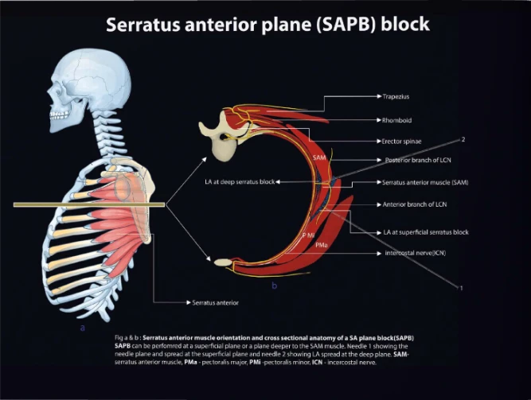
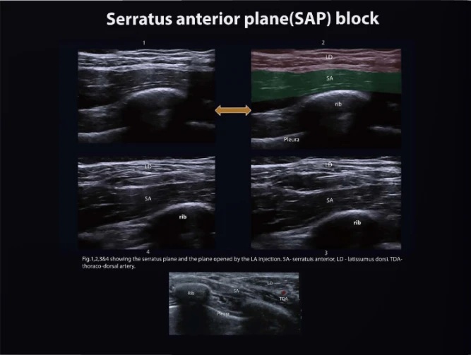

Book
NORA² Regional
An introduction to the Plan A blocks, the core set of nerve blocks described by RA-UK. Each block is set out with anatomy illustrations, ultrasound images, scanning and needling technique, and clinical pearls drawn from everyday practice.
Written as a practical guide for anaesthetists starting regional anaesthesia, with enough detail to be useful to experienced hands. 52 pages, landscape format, full colour.
Editor: Dr Arun Mohanraj FRCA EDRA. Anatomy artwork: Dr Sayeed Anwar.
Inside the book

